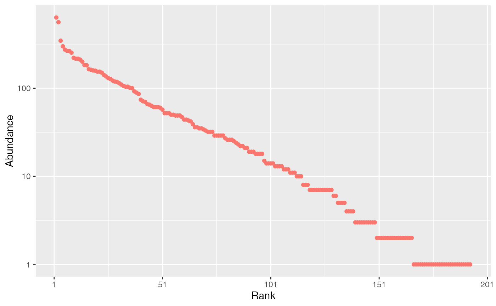

Random generation for the log-series distribution.
rlseries(n, size, alpha, show_progress = TRUE, check_arguments = TRUE)Number of observations.
The size of the distribution.
Fisher's \(\alpha\).
If TRUE, a progress bar is shown during long computations.
If TRUE, the function arguments are verified.
Should be set to FALSE to save time when the arguments have been checked elsewhere.
A numeric vector with the random values drawn from the log-series distribution.
Fast implementation of the random generation of a log-series distribution (Fisher et al. 1943) .
The complete set of functions (including density, distribution function and quantiles) can be found in package sads but this implementation of the random generation is much faster.
If size is too large, i.e. size + 1 can't be distinguished from size due to rounding,
then an error is raised.
Fisher RA, Corbet AS, Williams CB (1943). “The Relation between the Number of Species and the Number of Individuals in a Random Sample of an Animal Population.” Journal of Animal Ecology, 12, 42--58. doi:10.2307/1411 .
# Generate a community made of 10000 individuals with alpha=40
size <- 1E4
alpha <- 40
species_number <- -alpha * log(alpha / (size + alpha))
abundances <- rlseries(species_number, size = 1E5, alpha = 40)
# rCommunity() may be a better choice
autoplot(rcommunity(n = 1, size = 1E4, alpha = 40, distribution = "lseries"))
